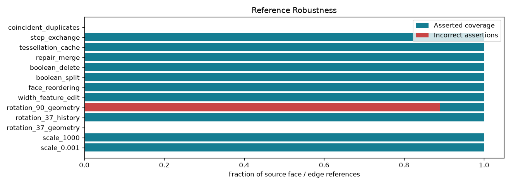

Offline, bounded research controls. A passing check may document a failure or an abstention.
| control_id | family | mode | source_count | asserted | incorrect | abstained | split | merge | deleted | coverage | incorrect_fraction | checks_pass |
|---|---|---|---|---|---|---|---|---|---|---|---|---|
| scale_0.001 | scale | normalized_box | 18 | 18 | 0 | 0 | 0 | 0 | 0 | 1.0 | 0.0 | True |
| scale_1000 | scale | normalized_box | 18 | 18 | 0 | 0 | 0 | 0 | 0 | 1.0 | 0.0 | True |
| rotation_37_geometry | rotation | geometry | 18 | 0 | 0 | 18 | 0 | 0 | 0 | 0.0 | 0.0 | True |
| rotation_37_history | rotation | operation_history | 18 | 18 | 0 | 0 | 0 | 0 | 0 | 1.0 | 0.0 | True |
| rotation_90_geometry | rotation | geometry | 18 | 18 | 16 | 0 | 0 | 0 | 0 | 1.0 | 0.8888888888888888 | True |
| width_feature_edit | feature_edit | normalized_box | 18 | 18 | 0 | 0 | 0 | 0 | 0 | 1.0 | 0.0 | True |
| face_reordering | reordering | geometry | 18 | 18 | 0 | 0 | 0 | 0 | 0 | 1.0 | 0.0 | True |
| boolean_split | boolean | operation_history | 18 | 18 | 0 | 0 | 8 | 0 | 0 | 1.0 | 0.0 | True |
| boolean_delete | boolean | operation_history | 18 | 18 | 0 | 0 | 0 | 0 | 5 | 1.0 | 0.0 | True |
| repair_merge | repair | operation_history | 30 | 30 | 0 | 0 | 0 | 16 | 4 | 1.0 | 0.0 | True |
| tessellation_cache | tessellation | geometry | 18 | 18 | 0 | 0 | 0 | 0 | 0 | 1.0 | 0.0 | True |
| step_exchange | step_exchange | geometry | 18 | 18 | 0 | 0 | 0 | 0 | 0 | 1.0 | 0.0 | True |
| coincident_duplicates | ambiguity | geometry | 18 | 0 | 0 | 18 | 0 | 0 | 0 | 0.0 | 0.0 | True |
Detailed evidence · CSV · Contract
